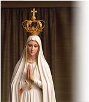
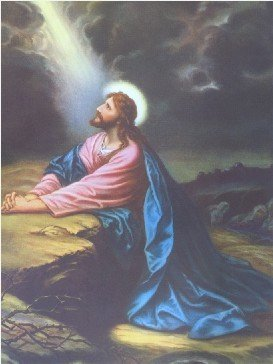
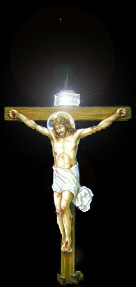
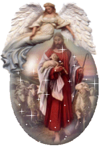
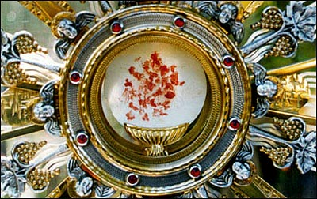

"APELOS
DA MENSAGEM"
(1ª Parte)
Com o objetivo de evidenciar os APELOS contidos
na Mensagem Celeste, a fim de que
a humanidade possa se beneficiar da grandeza e
do inestimável valor do conteúdo, sintetizaremos a seguir os tópicos que no entender
da Irmã Lucia, revelam a maior dimensão e a impressionante ternura do Amor
de DEUS.
1 – O Primeiro Apelo é um:
APELO À FÉ.
“Meu DEUS, eu creio”!
A Fé está na base de toda vida espiritual. É
pela Fé que acreditamos na existência de DEUS, no Seu Poder, na Sua Sabedoria,
na Sua infinita Misericórdia, no Seu Perdão, na Sua Obra Redentora e no seu
Amor de PAI.
É pela fé que acreditamos na Igreja de DEUS,
fundada por JESUS CRISTO, e na Doutrina que ela nos transmite, por meio da qual,
seremos salvos. A Irmã Lúcia acrescenta:
É pela fé que vemos DEUS e com ELE nos encontramos! São Paulo diz que somos templo
de DEUS, mas quero acrescentar que primordialmente DEUS é o nosso templo onde nos
encontramos submergidos, mergulhados profundamente no Ser Imenso de DEUS que
tudo vê tudo penetra e a tudo cria.
Então, o Apelo Divino nos convida a cultivarmos
a semente da fé, que no dia do nosso Batizado, o ESPÍRITO SANTO colocou em
nosso coração.
2 – Segundo Apelo: APELO À ADORAÇÃO.
Ainda na sua primeira visita, o Anjo de DEUS
ensinou aos três pequenos uma oração:
“Meu DEUS, eu creio, adoro,
espero e Vos amo. Peço-Vos perdão para os que não crêem, não adoram, não esperam
e não Vos amam”.
Este procedimento do Anjo veio reforçar o que
está escrito na Sagrada Escritura no Livro do Êxodo:
“Prestareis culto unicamente ao
SENHOR, vosso DEUS, e ELE abençoará o vosso pão e a vossa água; afastará a
enfermidade do meio de vós”. (Ex 23, 25)
Em São Mateus, nos versículos que
focalizam a tentação no deserto (Mt 4, 10), o Apóstolo recorda a citação feita por JESUS
diante de satanás: "Ao SENHOR Teu DEUS
adorarás e a ELE somente prestarás culto". (Dt 6, 13)
Com esta Lei, DEUS exige que somente ELE seja
adorado, porque só ELE é o CRIADOR e inventor da humanidade, perfeitamente digno de ser
adorado por Suas criaturas.

ELE proíbe a humanidade de fabricar ídolos:
elegendo animais ou construindo imagens com materiais, formando o bode,
carneiro, cobra, elefante, etc. e ou seres inexistentes: como a deusa do mar,
o pai crioulo, etc.; e também de formar ídolos na mente do povo (o ídolo do
dinheiro, elegendo uma avarenta paixão por dinheiro e por bens materiais:
levando as pessoas a acumular gananciosamente imóveis, carros, barcos,
aplicações financeiras, etc., construindo a sua vida unicamente ao redor
dos seus bens). Isto porque os ídolos ocupam o “lugar” que pertence a DEUS!
Significa dizer, que ao eleger ídolos, insensivelmente ou diretamente, a
criatura está se afastando do CRIADOR, porque vive preocupado com seus bens.
Todavia, é preciso não confundir estes ídolos perniciosos, com as imagens de
JESUS, de NOSSA SENHORA e dos SANTOS. A eles, nós não prestamos e nem devemos
um culto de adoração, mas apenas estimamos as suas imagens pelo que elas
representam: nos recordando a bondade, as graças, o auxílio, a proteção,
o carinho e o amor que Eles nos dedicam. Acolhemos a imagem dos Santos,
da mesma maneira que guardamos e estimamos o retrato de nossos pais, de
nossos irmãos e das pessoas amigas, lembrando a amizade, a bondade e o
carinho que cultivamos ao longo de nossa vida.
Possuir bens e dinheiro não é pecado. O
mandamento Divino condena o "endeusamento dos bens", ou seja, a eleição
dos bens prioritariamente, legando a um plano inferior o amor a DEUS.
O culto de Adoração é dedicado exclusivamente
ao nosso DEUS e SENHOR. A NOSSA SENHORA, aos SANTOS e ANJOS, assim como aos nossos
parentes e amigos, nós amamos cada um deles com um determinado grau de intensidade
e veneração, que expressa a grandeza do carinho e o valor do afeto que lhe devotamos.
3 – Terceiro Apelo: APELO À ESPERANÇA.
Na oração que o Anjo do SENHOR ensinou aos
três pequenos pastores, incluiu a palavra
“espero”.
Toda a nossa “Esperança” deve estar no SENHOR, porque ELE
é o único DEUS verdadeiro, que nos criou com amor eterno e nos redimiu, enviando
o Seu próprio FILHO, NOSSO SENHOR JESUS CRISTO, que padeceu e morreu
para a nossa salvação. “Como Moisés
levantou a serpente no deserto, assim é necessário que seja levantado o FILHO
DO HOMEM, a fim de que todo aquele que crer tenha NELE a vida eterna”
. (Jo 3, 14-15)
Se os israelitas feridos de morte pela mordida
das cobras venenosas no deserto, olhando para a serpente de bronze que Moisés
fixara no poste, recuperavam a vida, quanto mais nós, se soubermos com fé e
confiança, levantarmos o nosso olhar para CRISTO e soubermos unir a Cruz DELE a
nossa cruz de cada dia, através de nosso trabalho honesto, das nossas fadigas, das
nossas contrariedades e decepções, das nossas dores e angústias, das nossas
alegrias e tristezas! Com certeza a nossa
“esperança de vida” está no SENHOR, e ela deve incutir
no fiel, um sincero arrependimento pelos pecados cometidos e um firme propósito
de não mais cometê-los, com convicção na citação do Apóstolo: “Todo o que NELE crer terá a vida eterna”.
(1 Jo 5, 10-13)
4 – Quarto: APELO AO AMOR DE DEUS (A CARIDADE DIVINA).
São João escreveu: “DEUS é Amor”. (1 Jo 4, 8) ELE nos ama com Amor
Eterno, ou seja, desde toda eternidade. Esta nossa eterna presença em DEUS vemo-la
anunciada num texto da Sagrada Escritura, que a Santa Igreja aplica a NOSSA SENHORA,
legitima e incomparável representante da humanidade, que por isso mesmo, suscita
igualmente a nossa presença, ou seja, a presença de todas as gerações, na mente de
DEUS e no Seu desígnio criador desde toda eternidade.
“O SENHOR me criou, como
primícias das Suas Obras, desde o princípio, antes que criasse coisa alguma. Desde
a eternidade fui constituída, desde a origem, antes que a Terra fosse criada.
Ainda não havia os abismos, e eu já tinha sido concebida; ainda as fontes das
águas não tinham brotado; ainda não tinham assentado os montes sobre as suas
bases; antes de existir outeiros, eu já tinha nascido. Ainda ELE não tinha
criado a terra, nem os campos, nem o primeiro pó da terra. Quando ELE preparava
os Céus, eu estava presente; quando colocava uma abobada sobre a superfície do
abismo, quando firmava as nuvens lá no alto, quando equilibrava as fontes do
abismo, quando fixava ao mar o seu termo, para que as águas não ultrapassassem
os seus limites; quando assentou os fundamentos da Terra, eu estava com ELE”
. (Prov 8, 22-30)
criasse coisa alguma. Desde
a eternidade fui constituída, desde a origem, antes que a Terra fosse criada.
Ainda não havia os abismos, e eu já tinha sido concebida; ainda as fontes das
águas não tinham brotado; ainda não tinham assentado os montes sobre as suas
bases; antes de existir outeiros, eu já tinha nascido. Ainda ELE não tinha
criado a terra, nem os campos, nem o primeiro pó da terra. Quando ELE preparava
os Céus, eu estava presente; quando colocava uma abobada sobre a superfície do
abismo, quando firmava as nuvens lá no alto, quando equilibrava as fontes do
abismo, quando fixava ao mar o seu termo, para que as águas não ultrapassassem
os seus limites; quando assentou os fundamentos da Terra, eu estava com ELE”
. (Prov 8, 22-30)
A Irmã Lucia escreveu: Por certo que, entre todas as criaturas, nenhuma como NOSSA SENHORA foi
tão amada por DEUS. Mas todos nós, desde toda eternidade, estamos presentes na mente
de DEUS, no seu desígnio criador; e ELE criou todas as coisas por amor a cada um
de nós, porque, desde todo o sempre, nos teve presente e nos amou. Temos para
com DEUS uma dívida de amor eterno, e só na continuidade dos séculos é que
poderemos ir satisfazendo esta dívida, e como é evidente, sem nunca a
conseguirmos saldar, porque o amor de DEUS sempre existiu e permanece
com a maior intensidade pela eternidade sem fim.
Um cuidado importante e necessário à vida
da humanidade é exercitar o amor, mas me refiro ao amor puro e sem qualquer interesse
e sem nenhuma intenção de vantagem. Um amor manifestado sob a forma de ser
atencioso, de servir com disponibilidade, de exercitar uma amizade fraterna e
não intencional, a não ser a boa intenção do companheirismo e a satisfação sincera
de um encontro ou de uma conversa amiga . Através da Mensagem de
Fátima percebe-se com fiel claridade o convite de NOSSA SENHORA a humanidade
de todas as gerações a um retorno a DEUS, mas um retorno no amor, no jubilo
de rezar e de se encontrar na presença do SENHOR. Este procedimento, além
de proporcionar um prazer incomensurável, é também uma maneira eficaz e
insubstituível para a purificação interior, que propiciará ao fiel, alcançar
de DEUS, o perdão das culpas dos pecados que ele cometeu.
“Renuncie a si mesmo
e abrace a Cruz que o SENHOR lhe confiou, por amor a ELE e ao próximo por
causa DELE, para assim, pela infinita misericórdia de DEUS, lhe ser concedida
à alegria de viver e num dia, lhe ser concedida à graça de alcançar a morada
eterna no Céu”, são palavras da Irmã Lúcia que
esclarece a última Vontade do CRIADOR.
5 – Quinto: APELO AO PERDÃO.
Na oração que o Anjo ensinou aos três
pequenos pastores também diz: “Peço-Vos
perdão para os que não crêem, não adoram, não esperam e não Vos amam”.
Então, observamos que logo imediatamente a
seguir ao Apelo a Caridade Divina, a Mensagem nos pede que exercitemos o Perdão;
ela nos conduz a pedir a DEUS o perdão para os pecados de nossos irmãos e para
os nossos também; para os que não tem fé e para os que acreditam; para os que
não adoram e para os que se inclinam diante da Majestade do SENHOR; para os que
não esperam e para os que confiam; para os que não amam e para os que praticam a
caridade. Por isso, na chamada oração dominical, JESUS nos ensina a pedir:
“Perdoai as nossas ofensas, assim como nós
perdoamos a quem nos tem ofendido”. (Mt 6, 12)
Em outra página da Sagrada Escritura São Pedro
perguntou a JESUS quantas vezes devemos perdoar ao nosso irmão por faltas
que ele comete: “Até sete vezes”?
O SENHOR respondeu: “Não
te digo sete vezes, mas até setenta vezes sete.” (Mt 18, 21-22)
6 – Sexto:
APELO À ORAÇÃO.

Na segunda Aparição aos pastorinhos, o Anjo do SENHOR
começa dizendo: “Orai, orai muito”.
As crianças brincavam sentadas na laje do poço,
no quintal da casa dos pais de Lúcia. O Mensageiro Celeste lhes disse as seguintes
palavras: “Que fazeis”?
E logo continuou: “Orai, orai muito! Os Corações
de JESUS e de MARIA têm sobre vós desígnios de misericórdia. Oferecei constantemente
ao Altíssimo, orações e sacrifícios”.
Na ocasião, as crianças não tinham discernimento
suficiente para suspeitar que aquela chamada à oração não era somente para elas,
mas também para toda a humanidade. Hoje,
escreve a Irmã Lúcia,
considero este Apelo como uma chamada de atenção para o caminho marcado por DEUS
às Suas criaturas, desde o princípio da criação, ou seja, o Caminho da Oração.
De fato, no Antigo e no Novo
Testamento, encontramos bem vincada a senda que DEUS traçou à humanidade. Mas,
infelizmente, os homens, na sua maioria, ignoram o fim para o qual foram criados;
eles ignoram a existência de DEUS, seu CRIADOR; ignoram o Santo Nome de
DEUS, a Quem nunca souberam dar o doce Nome de PAI; e ignoram o caminho que
devem seguir para poderem um dia chegar a ser felizes na Eternidade. Assim, a
maior parte da humanidade é vitima da ignorância, busca a felicidade onde não a
pode encontrar e se afunda cada vez mais na desgraça e na miséria. Lancemos uma
vista de olhos sobre o mundo! Que vemos? Qual é o quadro que se depara a nossos
olhos? Guerras, ódios, ambições, raptos, roubos, vinganças, fraudes, homicídios,
imoralidades, etc. E em consequência de tantos pecados, a humanidade vive sem a
proteção Divina, a força do maligno que quer destruir o mundo atua livre, e
produz: catástrofes, doenças, desastres, fome, miséria, e toda espécie de dor e
sofrimento, sob cujo peso a humanidade geme e chora.
Resumindo as palavras da Irmã Lucia, é através
da Oração que entramos em sintonia de amor com o nosso DEUS. Assim, quem reza
está com DEUS e recebe a proteção Divina; quem não reza procura outro caminho e
será presa fácil para as forças do mal.
A Irmã Lucia reforça o poder da oração:
É a nossa Oração e os nossos Sacrifícios,
unidos à grandeza da Oração e ao Sacrifício de JESUS, que SE ofereceu ao PAI
ETERNO para que fossemos salvos; é a nossa caridade unida a Caridade do Redentor;
em suma, é o fruto do amor, do qual o coração é o símbolo e o receptáculo, donde esse
amor transborda em perdão, misericórdia e graça, beneficiando a todos que o praticam
e invocam. Por isso são necessárias as nossas orações e os nossos sacrifícios, primeiro,
NOSSO SENHOR os aceita em nosso benefício e a seguir, em benefício do próximo.
Mas não esqueçamos que, em primeiro lugar, os
sacrifícios que devemos oferecer ao SENHOR DEUS e que ELE aceita e nos pede, são
aqueles que devemos impor a nós mesmos, dominando a nossa vontade pessoal e
cumprindo os Mandamentos da Sua Lei Divina.
7 – Sétimo: APELO AO SACRIFÍCIO.
Na mesma Mensagem o Anjo nos pede:
“Oferecei constantemente ao Altíssimo,
Orações e Sacrifícios”.
No Antigo Testamento, os sacerdotes costumavam
oferecer ao CRIADOR, por eles
mesmos e pelo povo, sacrifícios de animais, que se
imolavam como vítimas propiciatórias. Mas estas vitimas eram apenas figuras,
comparadas com o sacrifício de CRISTO, que foi a verdadeira vitima oferecida ao
PAI para remir os pecados da humanidade. O Sacrifício de CRISTO ofuscou o falso
sacrifício dos sacerdotes da Antiga Aliança e se perpetuou, sendo o Sacrifício
da Cruz renovado diariamente, de modo incruento (sem derramamento de sangue),
nas Celebrações Eucarísticas (Santas Missas) que acontecem em todos os Altares
no mundo.
Mas a Irmã Lucia esclarece: Somente isto não basta, porque como diz São Paulo
(Cl 1,24), é preciso
completar em nós o que falta à Paixão de CRISTO, porque somos membros do Corpo
Místico de CRISTO. Ora, quando um membro
de nosso corpo sofre, todos os outros membros sofrem com ele, e, quando um membro
se sacrifica, todos os outros membros participam desse sacrifício. Se um membro de
nosso corpo estiver enfermo e o mal for grave, ainda que o mal esteja localizado num
único membro, todo o corpo sofre e pode morrer. O mesmo acontece na vida espiritual: todos
nós somos enfermos, todos temos muitas deficiências e pecados, por isso, todos nós
temos o dever de, em união com a vitima inocente que é CRISTO, nos sacrificarmos
em reparação pelos nossos pecados e pelos pecados dos nossos irmãos, porque
todos nós somos membros do mesmo e único Corpo místico do SENHOR.
8 – Oitavo: APELO À PARTICIPAÇÃO NA EUCARISTIA.
Na segunda Aparição, o Anjo do SENHOR
trouxe um Cálice e uma Hóstia e deu comunhão ao Francisco, a Jacinta e a Lucia, dizendo:
“Tomai e bebei o Corpo e o Sangue de JESUS
CRISTO, horrivelmente ultrajado pelos homens ingratos. Reparai os seus crimes
e consolai o vosso DEUS”.
Este apelo, que a Mensagem nos dirige, está
bem explícito no Evangelho, mas é mal compreendido por muitas pessoas, porque é
esquecido, posto a parte e abandonado, e ainda, o que causa mais tristeza além de
ser deplorável, é ver o Corpo de DEUS ser
“horrivelmente ultrajado”; a Sagrada Comunhão, é recebida
sem que haja uma responsável e correta preparação por um grande número de fieis.
Uma maioria de pessoas entram na fila para comungar seguindo um impulso, ou
acompanhando os demais, sem uma honesta exigência do seu espírito, porque
também se encontra num "estado de graça deformado",
frio e manchado, sem um honesto e sincero arrependimento dos pecados cometidos,
mesmo dos veniais. Este procedimento não é aconselhável, porque além de ser
um sacrilégio, enfraquece a fé e abre um perigoso espaço para as
investidas de satanás.
Quando JESUS manifestou o Seu intento
de ficar conosco na Eucaristia, para ser o nosso alimento espiritual, a nossa
força e a nossa vida, os fariseus se escandalizaram e não acreditaram. Mas o SENHOR
insistiu: “EU sou o pão da vida”... “Se alguém
comer deste pão viverá eternamente; e o pão que darei é a Minha Carne para a vida do
mundo”... “Se não comerdes a Carne do FILHO DO HOMEM e não beberdes o Seu
Sangue, não terá a vida em vós”. (Jo 6,48-51.53-54)
Fica evidente, que se não nos alimentarmos da
Sagrada Comunhão, não teremos a vida da graça, a vida sobrenatural, que nasce da
nossa união com CRISTO, através da Sagrada Eucaristia. Então, participar das Santas
Missas aos domingos e feridos de preceito, preparando-nos dignamente para receber
JESUS Sacramentado, além de ser um procedimento e dever do cristão fiel,
é uma demonstração de amor filial, que jamais será esquecida pela imensidão
da misericórdia de DEUS.
9 – Nono: APELO À INTIMIDADE COM A SANTÍSSIMA TRINDADE.
Na oração que o Anjo ensinou aos três pequenos
pastores, reza: “SANTÍSSIMA
TRINDADE,
PAI, FILHO, e ESPÍRITO SANTO, adoro-Vos profundamente”...
A Mensagem propõe a nossa fé e a nossa adoração
ao Mistério de DEUS Uno e Trino, em três Pessoas Divinas distintas: o PAI, o FILHO
e o ESPÍRITO SANTO. Este é o Mistério da SANTÍSSIMA TRINDADE que a humanidade
não tem capacidade para entendê-lo, porque está reservado a sabedoria e ao poder
de DEUS.
Na obra da criação, existem tantas
coisas maravilhosas que também não compreendemos como se realizam, mas que somos
sugestionados a ver nelas uma figura do grande Mistério Trinitário, escreveu a Irmã Lúcia.
Assim, por exemplo, cada individuo é uma só pessoa, mas nela existem coisas tão
distintas: umas de ordem natural, outras de ordem sobrenatural. Somos Corpo:
matéria formada por DEUS do barro da terra, e este Corpo sustenta-se dos
produtos da mesma terra, donde foi tirado e à qual voltará um dia.
Já a vida do nosso Corpo é
a Alma, um ser espiritual, criado por DEUS à Sua imagem e semelhança, como diz a
Sagrada Escritura: “DEUS criou o homem
à Sua imagem, o criou à imagem de DEUS; ELE os criou homem e mulher”. (Gn 1, 27) A nossa Alma é, pois,
um ser espiritual criado pelo sopro de DEUS: ela é imortal.
Assim, pela Vontade do CRIADOR, todo ser
humano tem um Corpo e uma Alma. O Corpo nasce do relacionamento amoroso de nossos
pais. A Alma vem de DEUS. No instante supremo da fecundação, quando o espermatozóide
do homem penetra no óvulo da mulher, a Alma penetra naquele conjunto de células
e realiza o trabalho de conformação do feto, que é um ser que nascerá para a
vida.
Então, cada pessoa possui uma parte humana, que
é o seu Corpo, e uma parte Divina, que é a sua Alma. São duas partes essenciais
e ninguém existe sem elas.
Assim sendo, para uma pessoa ser "completa" e sentir-se
realizada, ou seja, para "viver em
plenitude", terá que harmonizar a sua existência,
satisfazendo igualmente as necessidades de seu Corpo e da sua Alma.
Satisfazemos as necessidades do Corpo, todas as
vezes que atendemos as suas exigências, por exemplo: quando temos fome e comemos,
quando temos sede e bebemos água e assim sucessivamente, quando praticamos esportes,
fazemos recreações, dormimos etc.
Satisfazemos as necessidades da Alma, procurando
uni-la a DEUS, através de todas as formas de Orações, das Santas Missas que participamos
e dos Sacramentos que recebemos, assim como da caridade e das boas obras que
realizamos etc.
Se uma pessoa apenas se preocupa em atender as
necessidades de seu Corpo, "atrofiará"
a sua Alma, a sua existência será anormal, mesmo que aparentemente
mostre progresso financeiro, possuindo muitos bens materiais. Isto porque, possuindo duas
partes vitais (o Corpo e a Alma), só exercita uma delas.
Da mesma forma que o Corpo não vive sem o alimento
material, a Alma "não vive"
sem o alimento espiritual (as orações e as boas obras), ou seja, a Alma não
têm “vida em plenitude"
sem o primordial alimento que é a presença de DEUS. Ela apenas existe... E Corpo com Alma
"sem vida", é o
mesmo que uma pessoa com um "membro
atrofiado de seu Corpo". Ele "apenas existe, mas não funciona".
 Estas considerações propõem que uma pessoa para
ser equilibrada física e moralmente, deverá cuidar igualmente com o mesmo interesse
e zelo, de seu Corpo e da sua Alma. Consequentemente, procurando viver em perfeita
consonância com a sua própria natureza, estará também em inteira harmonia com a vida,
será uma pessoa feliz. Terá as suas dificuldades e provações, como todos nós temos
inerentes a Cruz e a Missão da existência que o SENHOR nos confiou, mas terá também a
lucidez, a tranquilidade e o discernimento necessário a buscar soluções adequadas
para todos os problemas, que a sua Alma inspirada pelo ESPÍRITO SANTO,
encontrará na Luz de DEUS.
Estas considerações propõem que uma pessoa para
ser equilibrada física e moralmente, deverá cuidar igualmente com o mesmo interesse
e zelo, de seu Corpo e da sua Alma. Consequentemente, procurando viver em perfeita
consonância com a sua própria natureza, estará também em inteira harmonia com a vida,
será uma pessoa feliz. Terá as suas dificuldades e provações, como todos nós temos
inerentes a Cruz e a Missão da existência que o SENHOR nos confiou, mas terá também a
lucidez, a tranquilidade e o discernimento necessário a buscar soluções adequadas
para todos os problemas, que a sua Alma inspirada pelo ESPÍRITO SANTO,
encontrará na Luz de DEUS.
Resumindo dizemos que a humanidade nasceu
da generosidade Divina e, no Plano do CRIADOR, somos convidados a viver uma
existência para revelar o valor de nossos dons, da nobreza das virtudes, da força de
nossa caridade e da grandeza da misericórdia que exercitamos. Estes, são alguns dos
dons Divinos cedidos pelo CRIADOR por empréstimo a cada criatura e a somatória
da utilização dos mesmos, por cada pessoa, ensejará um grau certo na escala amorosa
do SENHOR, que lhe propiciará o conforto e as delicias do Paraíso Eterno,
conforme a benevolência da justiça de DEUS.
Então, viver em íntima comunhão de amor com
DEUS, é viver em intimidade com as Três Pessoas Divinas. Condição necessária e
essencial a cada criatura que quer viver em plenitude.
A Irmã Lucia realça: JESUS pede ao PAI ETERNO a nossa união com a SANTÍSSIMA TRINDADE:
“Como TU, ó PAI, estás em MIM e EU em TI,
que também eles (a humanidade) estejam em NÓS”. Esta é a nossa
vida sobrenatural, porque estar em DEUS é viver a vida de DEUS; DEUS presente em nós,
e nós mergulhados em DEUS. Esta vida de íntima união com o SENHOR, às vezes
apresentada como difícil e triste, é, ao contrário, simples, alegre e feliz, como diz
JESUS: “Para que tenham em si mesmos a plenitude
da Minha Alegria”. Aquela alegria de fazermos
a vontade de DEUS, de dar prazer ao SENHOR, guardando e observando a Sua Palavra.
JESUS, com muito amor, transmite ao PAI ETERNO:
“Eles guardaram a TUA Palavra. Agora sabem
que tudo quanto ME deste vem de TI, porque lhes dei as Palavras que TU ME deste,
e eles as receberam”. (Jo 17, 6-8)
Este Apelo do SENHOR ao CRIADOR,
revela a fervorosa intimidade que alicerça a harmonia entre os TRÊS DIVINOS:
DEUS PAI, DEUS FILHO e DEUS ESPÍRITO SANTO, e nos convida
a buscarmos alcançar em nossos dias o caminho da vida sobrenatural.

 Próxima
Página
Próxima
Página
Página
Anterior
Retorna
ao índice